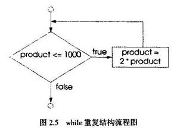

重复结构(repetition strucure)使程序 员可以指定一定条件下可以重复的操作。下列伪代码语句：
While there are more items on my shopping list Purchase next item and cross it off my list描述购物过程中发生的重复。条件"there are more ltems on my shopping list"(购物清单中还有更多项目)可真可假。如果条件为true．则执行操作"Purchase next item and cross it off my list"(购买下一个项目并将其从清单中划去)。如果条件仍然为true，则这个操作重复执行。while重复结构中的语句构成while的结构体，该结构体可以是单句或复合句。最终，条件会变为false(购买清单中最后一个项目并将其从清单中划去时)，这时重复终止，执行重复结构之后的第一条伪代码语句。
如果不在while结构中提供最终导致while条件变为false的操作，则合造成无限循环(infinite loop)错误，重复结构永不终止。
将关键字while的拼写变为“While”是个语法错误，因为C++是区分大小写的语言。while、if和else等所有C++保留关键字只能包含小写字母。
作为实际while的例子，假设程序要寻找2的第一个大于1000的指数值。假设整数变量prod-uct初始化为2，执行下列while重复结构之后，product即会包含所要值：
int product = 2;
while ( product <= 1000 )
product = 2 * product;
图2.5的流程图演示了对应于上述while重复结构的while结构控制流程。注意，流程图(除了小圆框和流程之外)也只能包含表示所需操作的矩形框和表示所需判断的菱形框。这是我们强调的操作/判断编程模型。程序员的任务就是根据算法需要用堆栈和嵌套两种方法组合其他几种控制结构，然后在这些框中填入算法所要的操作和判断，从而生成程序。流程图中清楚地显示了重复。流程从矩形出发，回到判断框中测试，直到判断为false。然后退出while结构，控制转入程序中下一条语句。

进入while结构时，product的值为2。变量product重复乘以2，连续取值4、8、16、32、64、128、256、512和1024。当product变为1024时，while结构条件product<=1000变为false，因此终止重复，product的最后值为1024。程序继续执行while后面的下一条语句。